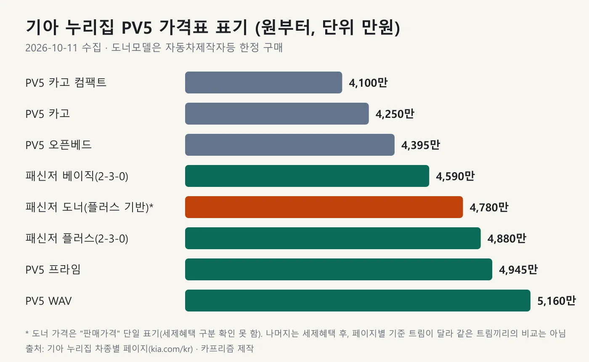
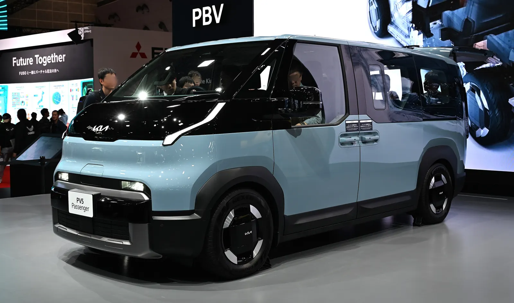
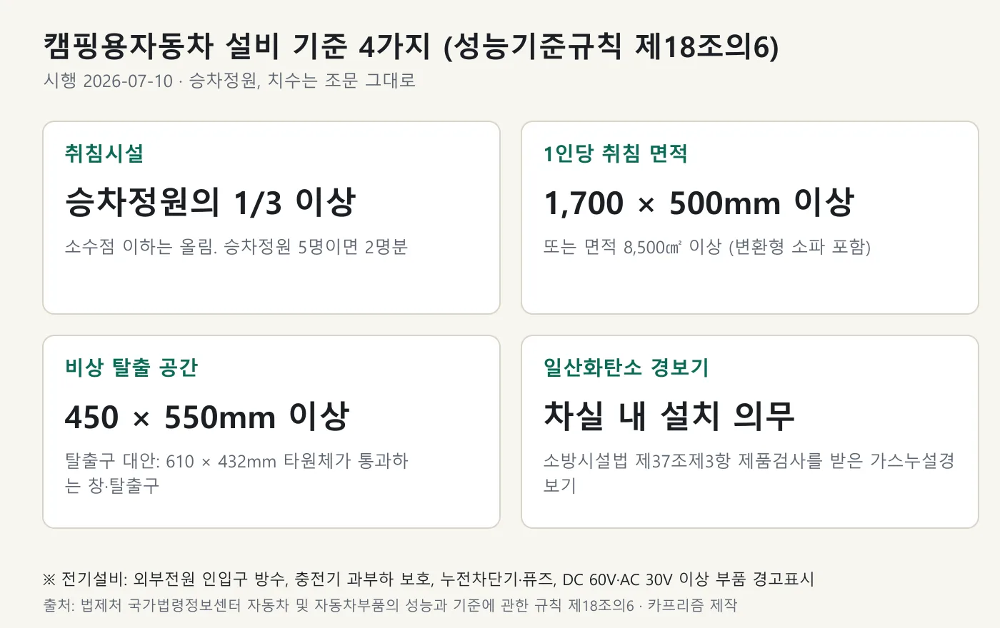
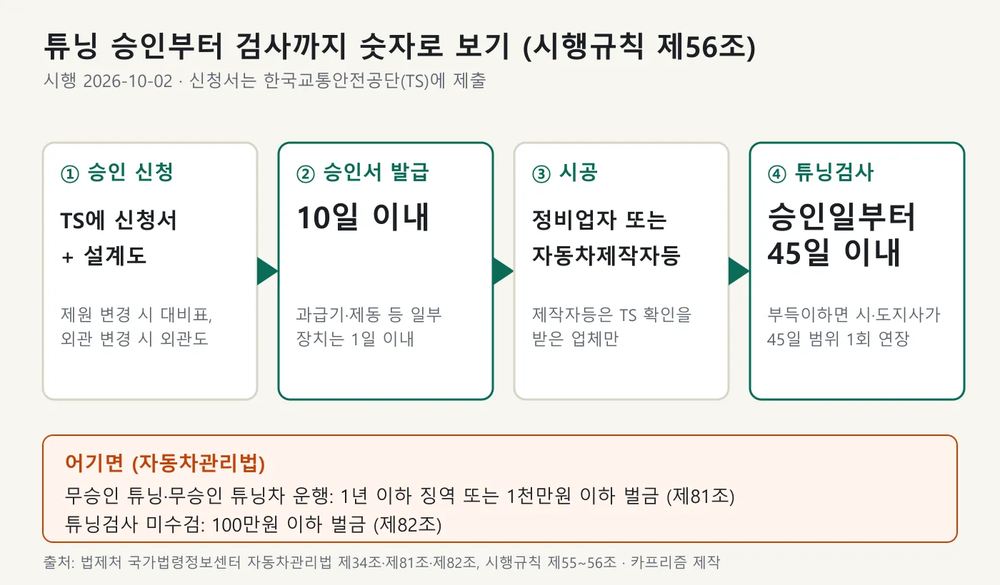
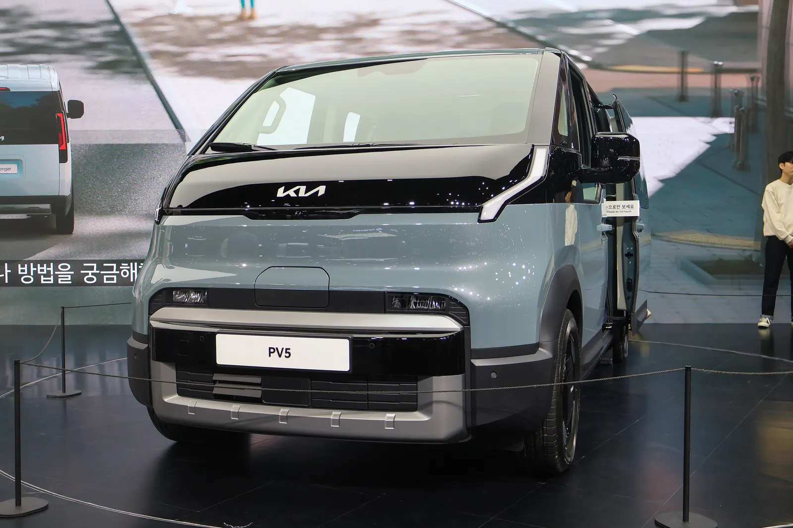
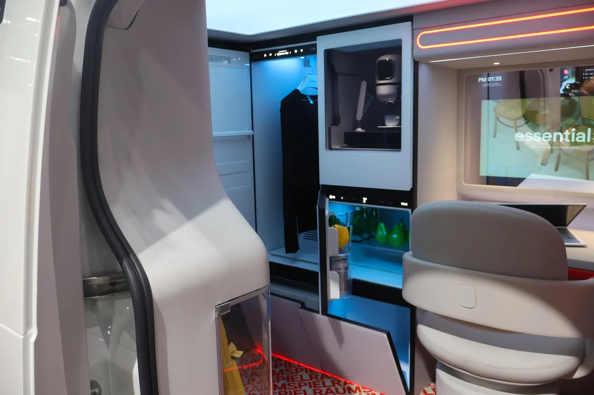
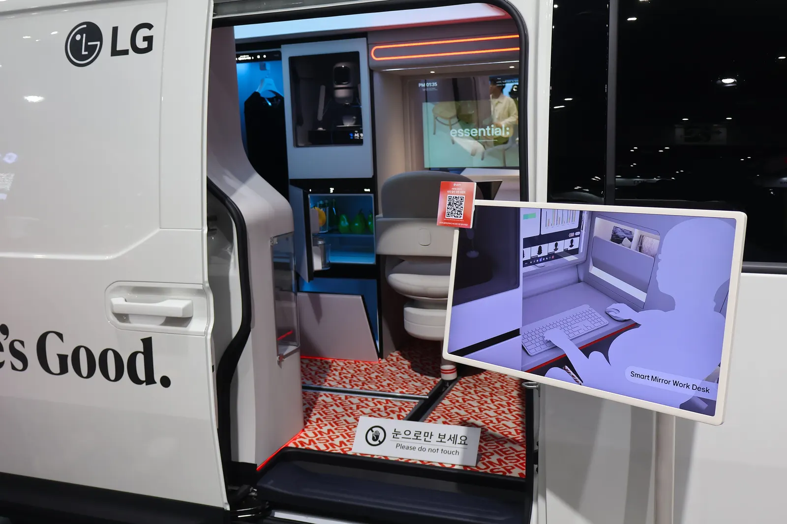
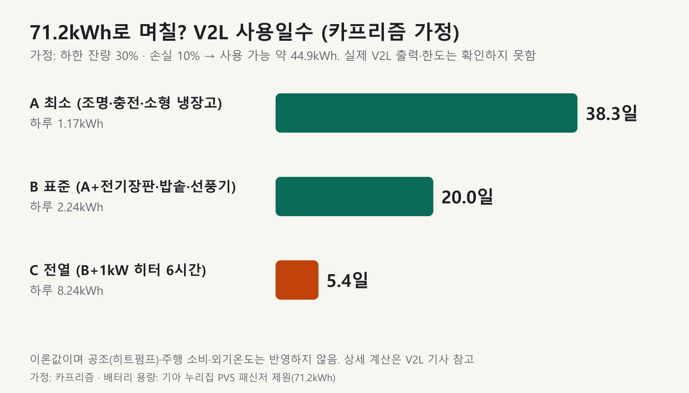
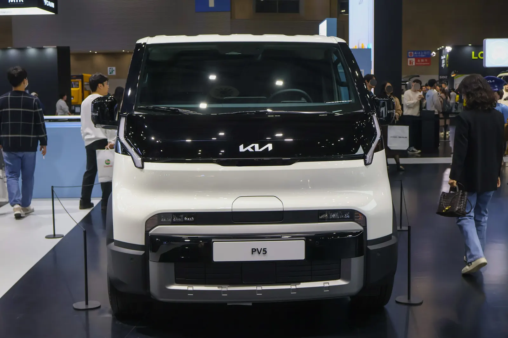

▲ 파일명이 'Kia PV5 WKNDR'로 올라온 전시 차량. 지붕 위 팝업 구조가 보이는 콘셉트 성격의 차이며 국내 판매 모델 목록에는 없다 ⓒ Oleg Yunakov, Wikimedia Commons (CC BY-SA 4.0)
"침대만 깔면 캠핑카가 되나요?" 기아 PV5로 캠핑카를 만들려는 사람이 가장 먼저 부딪히는 질문이다. 먼저 확인한 사실부터 적는다. 기아 누리집(kia.com/kr, 2026년 10월 11일 확인)에서 판매 중인 PV5는 패신저·카고·카고 컴팩트·오픈베드·프라임·WAV 등이고 '캠핑카' 이름이 붙은 판매 모델은 없다. 개조용 베이스인 패신저 도너모델이 있지만 누리집이 "자동차제작자등 한정 구매 가능 모델"이라고 적어 일반 소비자용이 아니다. 그래서 개인이 PV5를 캠핑카로 쓰려면 일반 모델을 사서 법에 맞게 직접 개조(또는 업체에 의뢰)하는 길이 현실적이다. 이 글은 그 법의 숫자를 법제처 국가법령정보센터 본문으로 확인해 정리한다. 기준은 자동차관리법과 시행규칙의 2026년 10월 2일 시행분, 자동차 및 자동차부품의 성능과 기준에 관한 규칙의 2026년 7월 10일 시행분이다. 일반 구조변경 규정은 자동차 구조변경 합법·불법 기사에서 다뤘고, 이 글은 PV5 캠핑 개조에 필요한 숫자와 절차에 집중한다.
▲ 파일명이 'Kia PV5 WKNDR'로 올라온 전시 차량. 지붕 위에 팝업 구조가 보이는 콘셉트 성격의 차다. 기아 누리집 국내 판매 차종 목록에는 이런 사양의 모델이 없다 ⓒ Oleg Yunakov, Wikimedia Commons (CC BY-SA 4.0)
1. 기아 공식 판매 모델부터 — '캠핑 PV5'는 누리집에 없다
기아 누리집의 PV5 관련 차종 페이지는 패신저, 카고, 카고 컴팩트, 오픈베드, 프라임, WAV(휠체어 이동), 택시 등이다. 이들 페이지와 PBV 컨버전 파트너십 페이지의 본문을 확인했지만 판매 중인 캠핑카 모델 항목은 없었다. 대신 세 가지 장치가 있다.
| 장치 | 누리집에 적힌 내용 | 일반 소비자에게 의미 |
|---|---|---|
| 패신저 도너모델(2-3-0 베이스) | 패신저 5인승(2-3-0) 플러스 트림을 베이스로 2열 시트와 러기지 언더트레이·러기지 보드 등을 달지 않고 출고. "자동차제작자등 한정 구매 가능 모델" | 개조업체(제작자등)용 상품이다. 일반 소비자가 살 수 있는 모델로 안내돼 있지 않다 |
| PBV 컨버전 파트너십 | 파트너사가 기아 PBV를 베이스로 직접 기획·개발·판매하는 '파트너십모델'. 구매 할인, 파트너십 브랜딩, 기술문의 핫라인 등을 지원(변경 가능)하며 파트너사는 품질·A/S 기준 수립 의무 | 개조 모델은 파트너사가 파는 구조다. 기아가 직접 판매하는 캠핑 모델은 아니다 |
| 순정 액세서리·Kia Collection | 러기지 평탄화 데크(허용 하중 150kg), 에어매트, 차박 선쉐이드, 루프랙 패키지, LED 테일게이트 램프, VanLab 인테리어 키트 등 | 개조가 아니라 용품이다. 6장에서 따로 본다 |
컨버전 모델에 대해서는 보도가 있다. 오토뷰는 2025년 6월 9일 기사에서 기아 발표를 인용해 오픈베드, 탑차, 프라임, 라이트 캠퍼 등의 컨버전 모델을 순차적으로 추가 출시한다고 전했고, 라이트 캠퍼를 "레저와 휴식에 최적화된" 모델로 소개했다. 이 기사에는 라이트 캠퍼의 사양·가격·출시 시기가 없고, 이 글에서 확인한 기아 누리집에도 해당 모델 페이지가 없다. 따라서 이 내용은 단일 출처 보도로만 적고, 출시 여부는 확인하지 못했다. 파트너사가 개조해 파는 캠핑카 시장 분위기는 캠핑카·카라반 예약 기사에서 볼 수 있다.
기아 누리집 차종 목록은 기아 PBV 차종 바로가기에서, 컨버전 파트너십 안내는 컨버전 파트너십 바로가기에서 볼 수 있다.
2. 라인업과 가격표 — 캠핑 베이스로 볼 만한 차는 이렇다
기아 누리집 각 차종 페이지 헤더의 '원부터' 가격과 패신저 가격표(2026년 10월 1일 기준 표기)를 모았다. 패신저와 프라임 페이지는 헤더에 "세제 혜택 후"라고 적혀 있고, 다른 페이지의 세금 기준 표기는 확인하지 못했다. 페이지마다 기준 트림이 달라 같은 트림끼리의 비교는 아니다. 가격표 단위는 원이고, 아래 표는 만 원으로 옮겼다.
| 차종·트림 | 헤더·가격표 표기(세제혜택 후) | 세제혜택 전 | 비고 |
|---|---|---|---|
| 패신저 2-3-0 베이직 | 4,590 | 4,829 | 1열 2인·2열 3인 5인승 |
| 패신저 2-3-0 플러스 | 4,880 | 5,134 | 도너모델의 베이스 트림 |
| 패신저 도너(2-3-0 베이스) | 4,780(판매가격 단일 표기) | 확인하지 못함 | 제작자등 한정 구매. 세제혜택 구분은 가격표에 따로 없음 |
| 카고 컴팩트 | 4,100 | 확인하지 못함 | 헤더 '원부터' |
| 카고 | 4,250 | 확인하지 못함 | 헤더 '원부터' |
| 오픈베드 | 4,395 | 확인하지 못함 | 헤더 '원부터' |
| 프라임 | 4,945 | 확인하지 못함 | 헤더에 '세제 혜택 후 / 베이직 기준' |
| WAV | 5,160 | 확인하지 못함 | 휠체어 이동 모델, 헤더 '원부터' |

▲ 기아 누리집 PV5 차종별 표기 가격. 도너모델(주황)은 판매가격 단일 표기이며 제작자등 한정 구매다 카프리즘 제작 도표
가격표 숫자를 쓸 때 주의할 점이 있다. 같은 페이지 안에서도 FAQ 문구의 가격이 헤더·가격표와 다르다. 패신저 FAQ는 시작 가격을 4,540만 원(세제혜택 후 베이직)으로 적고, 카고 FAQ는 4,200만 원(스탠다드 3DR)으로 적지만 헤더·가격표는 각각 4,590만 원과 4,250만 원이다. 이 글은 가격표와 헤더 숫자를 썼다. 수상 소식과 함께 정리한 PV5 패신저 오토카 수상·가격 기사의 4,709만 원은 그 시점의 값이라 지금 가격표와 다르다. 라인업이 10종으로 늘어난 배경은 PV5 카고 격벽 기사에, 화물 모델이 개인용 적재 차량으로 어떤 위치인지는 상용 전기차 적재 차량 비교 기사에 있다.

▲ 전시된 기아 PV5 패신저. 개인 캠핑 베이스로 가장 많이 거론되는 차종이다 ⓒ TTTNIS, Wikimedia Commons (CC0)
패신저 2-3-0 제원은 기아 누리집 기준 전장 4,695mm, 전폭 1,895mm, 전고 1,905mm, 휠베이스 2,995mm, 71.2kWh 배터리, 복합 358km(도심 404, 고속 301), 최고출력 120kW, 최대토크 250Nm, 공차중량 2,085kg이다. 배터리는 CATL NCM 각형으로 표기돼 있다. 패신저 페이지에는 2-3-0 외에 2-2-3, 1-2-2 배열 탭이 있지만 각 배열의 승차정원과 가격은 이 글에서 확인하지 못했다.
📍 보조금은 금액을 적지 않는다
PV5의 보조금은 차종 분류(승용·화물 등)와 거주지 지자체에 따라 달라지고, 이 글에서는 통합누리집 목록의 PV5 패신저·카고 금액을 확인하지 못했다. 블로그가 적은 금액은 2차 출처라 옮기지 않는다. 개조 차량이나 도너모델에 보조금이 적용되는지도 확인하지 못했다. 신청 전에 무공해차 통합누리집 보조금 지급대상 바로가기와 거주지 지자체 공고에서 직접 확인해야 한다.
3. 법에서 말하는 '캠핑용자동차' — 취침시설과 설비 기준
"침대를 놓았으니 캠핑카"가 아니다. 자동차관리법 제29조제3항은 국토교통부령으로 정하는 캠핑용자동차 안의 LPG 저장·가스설비 등은 「액화석유가스의 안전관리 및 사업법」에 적합해야 하고, 전기설비와 캠핑설비는 국토교통부령의 안전기준에 맞아야 한다고 정한다. 그 부령이 두 곳이다. 시행규칙 제30조의2가 캠핑용자동차가 무엇인지 정의하고, 성능기준규칙 제18조의6이 설비 기준을 정한다.
| 구분 | 조문 | 내용 |
|---|---|---|
| 정의 (필수) | 시행규칙 제30조의2 제1호 | 취침시설을 갖출 것 |
| 정의 (택일) | 시행규칙 제30조의2 제2호 | 취사시설, 세면시설, 개수대, 탁자(탈부착 가능한 탁자 포함), 화장실 또는 이동용 변기를 설치할 수 있는 독립공간 중 하나 이상 |
| 취침 인원 | 성능기준규칙 제18조의6 제2항 제1호 | 승차정원의 3분의 1 이상(변환형 소파 포함). 인원 계산은 소수점 이하 올림. 승차정원 5명이면 2명, 7명이면 3명 |
| 1인당 취침 면적 | 같은 호 | 가로 1,700mm × 세로 500mm 이상이거나 면적 8,500㎠ 이상 |
| 비상 탈출 | 같은 항 제2호 | 가·나·다 중 하나. 가: 운전자 차실과 캠핑 공간 사이 450×550mm 이상 탈출 공간. 나: 출입문과 먼 위치의 450×550mm 이상 탈출구·창문. 다: 610mm × 432mm 타원체가 통과하는 탈출구·창문 |
| 수납함 | 같은 항 제3호 | 주행 중 열리지 않게 하는 장치나 구조 |
| 일산화탄소 경보기 | 같은 조 제3항 | 소방시설법 제37조제3항 제품검사를 받은 가스누설경보기를 차실 내 설치 |
| 전기설비 | 같은 조 제1항 | 외부전원 인입구 방수 구조, 충전기 과부하 보호, DC 60V·AC 30V 이상 고전압 부품 경고표시, 누전차단기·퓨즈 등 전원차단 기능 |

▲ 성능기준규칙 제18조의6의 핵심 숫자. 승차정원 5명을 예로 든 '2명분'은 카프리즘의 계산 예시다 카프리즘 제작 도표
조문에서 눈에 띄는 점이 하나 있다. 법제처 본문 기준 시행규칙 제30조의2 제1호는 취침시설을 "성능기준규칙 제18조의4에 따른 취침시설"이라고 적는다. 그런데 성능기준규칙 제18조의4는 현재 '사이버보안'(2025년 8월 14일 신설)이고, 캠핑용자동차의 설비 기준은 제18조의6으로 옮겨져 있다. 제18조의6 조문에 "제18조의4에서 이동"이라는 이력이 붙어 있다. 인용 번호가 낡은 것이므로 취침시설 기준은 제18조의6으로 찾아야 한다. 조문을 직접 확인할 때는 성능기준규칙 바로가기에서 제18조의6을 열면 된다.
이 숫자가 PV5에서 어떤 의미인지는 승차정원이 정해져야 계산된다. 승차정원 확인은 5장에서 다시 다룬다. 한 가지 참고로, 1인 1,700mm라는 길이는 차의 외곽 치수가 아니라 취침시설의 치수다. PV5 패신저 2-3-0의 전폭 1,895mm와 휠베이스 2,995mm는 차 바깥 치수일 뿐이어서, 실내에서 1,700×500mm 침상이 몇 개 들어가는지는 확인하지 못했다.
4. 승인·시공·검사 — 튜닝 절차와 걸리는 시간
자동차관리법 제34조제1항은 자동차소유자가 국토교통부령으로 정하는 항목을 튜닝하려면 시장·군수·구청장의 승인을 받으라고 한다. 법 제77조제8항에 따라 이 승인 권한은 한국교통안전공단에 위탁할 수 있고, 시행규칙 제56조는 신청서를 한국교통안전공단에 내도록 정한다. 순서는 승인, 시공, 검사다.
| 단계 | 내용 | 숫자·조건 |
|---|---|---|
| ① 신청 | 튜닝 승인 신청서에 서류를 붙여 한국교통안전공단에 제출 | 튜닝 전·후 주요제원대비표(제원 변경 시), 외관도(외관 변경 시), 구조·장치 설계도 |
| ② 승인서 | 기준에 적합하면 승인서 발급 | 대부분 신청일부터 10일 이내. 동력전달·원동기 중 과급기, 조향·제동·연결장치, 일부 적재장치(픽업 적재함 덮개), 소음·등화장치는 1일 이내 |
| ③ 시공 | 자동차정비업자 또는 요건을 갖춰 TS 확인을 받은 자동차제작자등이 작업 | 제작자등 요건: 시설 400㎡ 이상, 리프트·피트, 기능사 이상 1인 이상 등 |
| ④ 튜닝검사 | 승인을 받은 날부터 45일 이내 검사 | 도난·사고·압류·장기 정비 등 부득이한 사유는 시·도지사가 45일 범위에서 한 차례 연장 가능 |

▲ 승인 10일(일부 장치 1일), 승인일부터 검사 45일이 핵심 숫자다. 벌칙은 법 제81조·제82조 카프리즘 제작 도표
어떤 것이 승인 대상인지는 시행규칙 제55조제1항이 정한다. 길이·너비·높이와 총중량, 그리고 차체·차대, 승차장치·물품적재장치, 원동기·동력전달장치, 조향·제동장치, 연료장치 및 고전원전기장치(해당 부분), 연결·견인장치, 소음·등화장치 등이다. 범퍼 외관이나 법 제34조의3에 따라 인증받은 튜닝부품 등 고시로 정한 경미한 구조·장치는 제외된다. 캠핑 개조에 대입하면 지붕 위에 팝업 구조를 달아 높이가 바뀌거나, 좌석을 떼거나 고정식 침대·수납을 달아 승차장치·차체 구조가 바뀌는 경우가 승인 대상 항목과 겹친다. 다만 개별 개조가 승인 대상인지는 설치 방식에 달려 있어 이 글에서 항목별로 단정하지 않는다. 승인 여부는 TS에 설계도로 확인해야 한다.
자동차제작자등이 직접 할 수 있는 튜닝 작업 범위는 시행규칙 제55조의3이 길이·너비·높이, 총중량, 차체·차대, 승차장치·물품적재장치 등으로 정한다. 업체에 맡길 때는 그 업체가 정비업자인지, 아니면 TS 확인을 받은 제작자등인지부터 물어야 한다.
📍 어기면 어떻게 되나
법 제81조는 승인 없이 튜닝을 한 사람과, 승인 없이 튜닝된 자동차인 줄 알면서 운행한 사람을 1년 이하 징역 또는 1천만원 이하 벌금으로 처벌한다. 튜닝검사를 받지 않으면 법 제82조에 따라 100만원 이하 벌금이다. 조문은 자동차관리법 바로가기에서 제34조·제43조·제81조·제82조로 볼 수 있다.
5. 비용·승차정원·적재 한도 — 확인한 것과 확인하지 못한 것
비용 항목은 구조가 정해져 있다. 승인 신청과 검사에는 수수료가 붙고, 시공은 업체 견적이다. 자동차관리법 제76조는 튜닝 승인 업무를 위탁받은 기관이 정한 수수료를 그 기관에 내도록 하는데, 한국교통안전공단(main.kotsa.or.kr 튜닝 수수료 안내, 2026년 10월 11일 확인, VAT 포함)은 튜닝승인 중 길이·너비·높이·중량분포와 관련된 구조까지 바꾸는 '구조 및 장치변경'을 60,000원, 그런 구조는 건드리지 않는 '장치변경'을 35,000원, 튜닝검사를 24,000원, 튜닝재검사를 20,000원(배출가스 재검사가 필요한 경우에만)으로 안내한다. 캠핑 개조가 어느 쪽에 해당하는지는 설계에 달려 있어 단정하지 않는다. 개조 비용은 공식 가격표가 없어 숫자를 적지 않는다.
| 항목 | 확인한 것 | 확인하지 못한 것 |
|---|---|---|
| TS 수수료 | TS 안내: 승인 6만 원(구조 및 장치변경)·3만 5천 원(장치변경), 검사 2만 4천 원(VAT 포함) | 개조 구성별 해당 구분 |
| 개조 시공비 | 시공은 정비업자 또는 제작자등이 한다 | 업체별 견적, 도너모델 가격 적용 조건 |
| 자동차 종류(승용·승합 등) | 종류가 바뀌는 튜닝은 원칙적으로 승인되지 않는다. 승용과 같은 차체로 만든 승합차의 좌석을 떼 승용으로 바꾸는 경우 등만 예외(제55조제2항제3호) | PV5 패신저의 등록상 종류 |
| 승차정원 | 패신저 2-3-0은 1열 2인·2열 3인 5인승(기아 누리집) | 법적 승차정원 등록 기준, 좌석 변경 가능 여부 |
| 총중량·적재 | 총중량을 제작허용총중량 넘게 늘리는 튜닝은 승인 불가. 공차중량 2,085kg(패신저 2-3-0) | 차량총중량 공식 수치 |
| 순정 용품 하중 | 러기지 평탄화 데크 허용 하중 150kg. 누리집 유의사항에 "애프터마켓 용품 장착 시 차량총중량 확인 필요, 차량총중량을 초과하여 용품 장착은 불가" | 용품 포함 실제 적재 여유 |
승차정원과 총중량은 캠핑 개조에서 두 번 쓰인다. 첫째 취침 인원이 승차정원의 1/3 이상이어야 하고, 둘째 침대·수납·배터리 등 무거운 설비를 얹을 때 제작허용총중량을 넘기면 승인 자체가 안 된다. 그런데 이 글에서 두 숫자를 공식 자료로 확인하지 못했다. 기아 가격표·카탈로그 PDF는 한글이 깨져 읽히지 않았다. 신차 등록증에 적힌 승차정원·차량총중량과 자동차 종류를 먼저 보고, 설계 전에 TS에 개조 구성(좌석 변경 여부 포함)을 문의하는 순서를 권한다.

▲ 서울모빌리티쇼 2025에 전시된 기아 PV5 패신저. 이 차의 승차정원·총중량은 등록증으로 확인해야 한다 ⓒ Treeinkr, Wikimedia Commons (CC BY-SA 4.0)
6. 개조 없이 가능한 범위 — 기아 순정 용품과 DIY 키트
기아 누리집 패신저 페이지에는 개조 없이 쓰는 용품이 있다. 차박 선쉐이드는 사생활 보호와 UV·열 차단, 에어매트는 캠핑·휴식용(러기지 평탄화 데크, 'PV5 아웃도어팩'이 필요), LED 테일게이트 램프는 야간 차박·캠핑 때 넓게 빛을 비추는 용품으로 소개돼 있다. VanLab 인테리어 키트는 미국 VanLab이 설계한 "차량 개조 없이 즐기는 DIY 차량용 캠핑 키트"로, 차량의 원형을 유지한다고 적혀 있다. 루프랙 패키지는 루프랙·루프선베드·루프레더·어닝브라켓 조합이다.
이런 용품이 곧바로 '캠핑용자동차' 요건을 채우는 것은 아니다. 캠핑용자동차 정의(시행규칙 제30조의2)는 취침시설과 취사·세면 등 시설을 갖춘 차이고, 설비는 앞의 3장 기준에 맞아야 한다. 반대로 캠핑용자동차로 등록하지 않고 차박용 용품만 얹는 경우의 승인 필요 여부는 설치 방식에 따라 달라지며, 이 글은 용품별 판단을 하지 않았다. 확인 기준은 두 가지다. 승인 대상 구조·장치(차체, 승차장치, 높이·너비 등)가 바뀌는지, 그리고 총중량이 제작허용총중량을 넘는지다. 일반적인 합법·불법 경계는 구조변경 기사를, 차박 장소 규정은 캠핑카 주차 규정 기사를 참고하면 된다.

▲ 서울모빌리티쇼 2025의 'Kia PV5 Spielraum' 전시 차량 실내. 옆문 안에 의자와 수납, 모니터형 장치가 보인다. 판매 모델인지는 확인하지 못했다 ⓒ Treeinkr, Wikimedia Commons (CC BY-SA 4.0)

▲ 같은 전시 차량의 옆문 쪽. 차 옆면에 LG 로고가 보이며, 전시 설명 화면이 함께 놓여 있다 ⓒ Treeinkr, Wikimedia Commons (CC BY-SA 4.0)
7. 전기차라서 달라지는 점 — V2L과 71.2kWh 가정
기아 누리집 패신저 페이지는 센터 콘솔의 실내 V2L 콘센트(220V)와 차량 외부용 실외 V2L 커넥터가 있다고 안내한다. 이 글에서는 V2L 출력(kW)과 사용 가능한 최저 잔량을 한국 공식 자료로 확인하지 못했다. 그래서 출력은 단정하지 않고, 71.2kWh 배터리만 기준으로 "며칠을 버티는가"를 카프리즘이 가정해 계산했다. 아래 숫자는 공식 값이 아니라 카프리즘 가정이다.
| 시나리오 | 가정한 부하(하루) | 하루 사용량 | 사용 가능 일수 |
|---|---|---|---|
| A 최소 | 조명 10W×6시간, 폰·노트북 충전 0.15kWh, 소형 냉장고 평균 40W×24시간 | 1.17kWh | 약 38.3일 |
| B 표준 | A + 전기장판 60W×8시간, 밥솥 700W×0.5시간, 선풍기 30W×8시간 | 2.24kWh | 약 20.0일 |
| C 전열 | B + 1kW 히터 6시간 | 8.24kWh | 약 5.4일 |
가정은 세 가지다. 배터리 71.2kWh(기아 누리집 표기), 주행·안전을 위해 잔량 30%는 남긴다, 변환·대기 손실 10%. 그러면 쓸 수 있는 전력량은 71.2 × 0.7 × 0.9 = 약 44.9kWh다. 기기별 소비전력은 카프리즘이 임의로 둔 평균값이고, 실제 V2L이 1kW 히터나 밥솥 같은 고출력 전열기구를 연속으로 받쳐 주는지는 설명서 확인이 필요하다. 이 계산은 공조(히트펌프)와 이동 중 소비, 겨울철 배터리 저하를 넣지 않은 이론값이다. 기아 누리집은 복합 4.5km/kWh로 표기하고 있어 인증 기준으로 1kWh가 약 4.5km인데, 이 환산은 참고용이고 실제 주행은 다르다. 기기별 전력량 계산식과 가전 동시 사용 판정은 V2L 계산 기사와 차박 전력 예산 기사에 따로 정리했다.

▲ 카프리즘 가정의 V2L 사용일수. 하한 잔량 30%·손실 10%를 둔 이론값이며 V2L 출력은 확인하지 못했다 카프리즘 제작 도표

▲ 서울모빌리티쇼 2025에 전시된 PV5(파일 설명상 카고). 화물 모델의 보조금·분류는 패신저와 달라 따로 확인해야 한다 ⓒ Treeinkr, Wikimedia Commons (CC BY-SA 4.0)
체크포인트: PV5 캠핑 개조, 계약 전에 순서대로 확인할 것
- 1단계 차종: 패신저·카고 중 무엇으로 시작할지 정한다. 등록증의 자동차 종류, 승차정원, 차량총중량을 먼저 확인한다(이 글에서는 확인하지 못했다)
- 2단계 설계: 취침시설 승차정원 1/3 이상, 1인 1,700×500mm 또는 8,500㎠, 비상 탈출구 450×550mm, 일산화탄소 경보기, 전기설비 보호장치를 도면에 넣는다
- 3단계 승인: 한국교통안전공단에 신청서·제원대비표·외관도·설계도를 낸다. 승인서 10일(일부 1일), 무승인 시공은 금지다
- 4단계 시공: 정비업자 또는 TS 확인을 받은 제작자등에게 맡기고, 총중량이 제작허용총중량을 넘지 않는지 본다
- 5단계 검사: 승인일부터 45일 이내 튜닝검사를 받는다. 못 받을 사정이면 시·도지사에게 연장 신청(45일 범위 1회)
- 보조금·비용: ev.or.kr과 지자체 공고, TS 수수료(승인 6만·3만 5천 원, 검사 2만 4천 원), 업체 견적을 따로 확인한다
8. 요약
기아 누리집에는 판매 중인 PV5 캠핑카 모델이 없다. 패신저 도너모델은 "자동차제작자등 한정 구매" 모델이고, 컨버전 모델(라이트 캠퍼 등)은 오토뷰 2025년 6월 9일 보도만 확인돼 사양·가격·출시 시기를 알 수 없다. 개인이 쓰려면 일반 모델을 법에 맞게 개조해야 한다.
법이 정한 숫자는 취침시설 승차정원 1/3 이상(올림), 1인 1,700×500mm 또는 8,500㎠, 비상 탈출구 450×550mm(또는 610×432mm 타원체), 승인서 10일(일부 1일), 승인일부터 튜닝검사 45일이다. 총중량 증가·종류 변경·안전도 저하 튜닝은 승인하지 않고, 무승인 튜닝은 1년 이하 징역 또는 1천만원 이하 벌금이다. 기준은 법·시행규칙 시행 2026-10-02, 성능기준규칙 시행 2026-07-10이다.
PV5 패신저 2-3-0 가격표는 베이직 4,590만 원, 플러스 4,880만 원(세제혜택 후)이다. PV5 패신저의 승용·승합 종류, 승차정원·총중량, V2L 출력, 보조금 금액은 확인하지 못했고, 71.2kWh V2L 일수(A 38.3일·B 20.0일·C 5.4일)는 카프리즘 가정이다. 시행규칙 제30조의2가 인용한 제18조의4는 낡은 번호이고 실제 기준은 제18조의6이다.